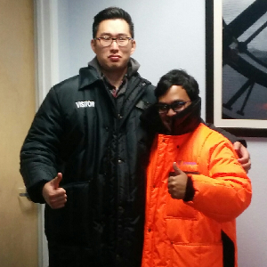
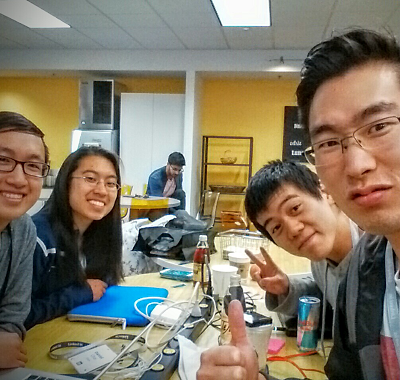
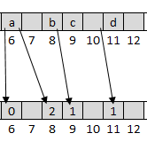

Warehouse Simulation
2016 Summer
As a software engineering/data science intern at Lineage Data Analytics, I co-led the development of Simulation 4.0 that simulates industrial warehouses with automated cranes. A multi-thread program was written to model a discrete-event simulation. Tools: SimPy, intervaltree

Decide
2016 Summer
Decide is a smartphone app that makes polling easier. It mimics Tinder's swiping interface for votes and gives results and visualization. Currently in the prototype stage and will be adding extensions for polling based on distance from the poller and searching. For LinkedIn Hackday 2016. Tools: Ionic framework, NodeJS, Elasticsearch

Robin Hood Hashing
2016 Fall
I implemented a crude version of Robin Hood hashing in Python with a quick performance testing script. The testing script consistently shows lower variance in insertion distance. Lower variance in insertion distance addresses a major downside of open addressing in other hashtables. Tools: Python, Link to Repository, Attribution